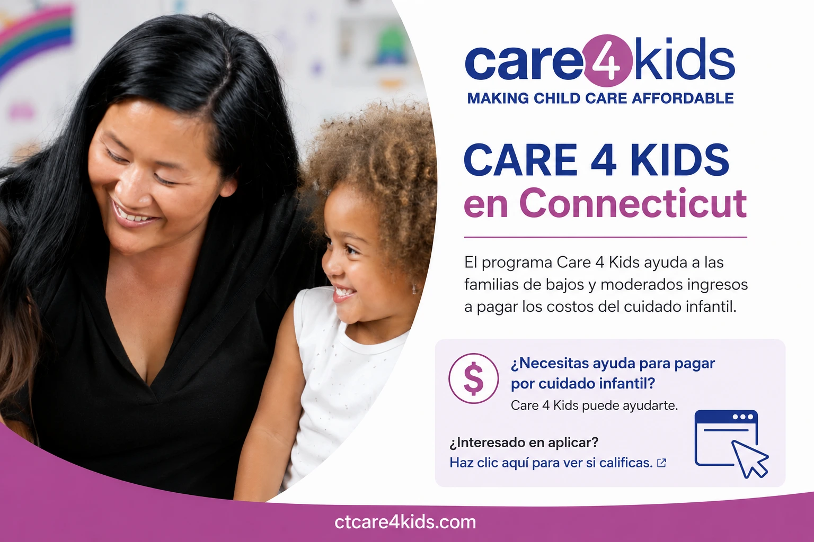

¿Qué es Care 4 Kids en Connecticut?
Encontrar un programa de cuidado infantil de calidad es una prioridad para muchas familias. Sin embargo, los costos del daycare pueden representar un desafío para algunos hogares. Por esta razón existe Care 4 Kids, un programa diseñado para ayudar a las familias elegibles de Connecticut a acceder a servicios de cuidado infantil seguros y confiables.

¿Qué es Care 4 Kids?
Care 4 Kids es un programa de asistencia para el cuidado infantil que ayuda a familias elegibles en Connecticut a cubrir parte de los costos asociados con el cuidado de sus hijos mientras los padres trabajan, estudian o participan en programas aprobados de capacitación laboral.
¿Quién puede calificar?
Los requisitos pueden variar según las regulaciones vigentes del programa, pero generalmente se consideran factores como el tamaño del hogar, los ingresos familiares y la situación laboral o educativa de los padres o tutores.
¿Qué beneficios ofrece?
El programa puede ayudar a reducir significativamente el costo mensual del cuidado infantil, permitiendo que más familias tengan acceso a programas educativos y ambientes seguros para el desarrollo de sus hijos.
¿Cómo se solicita?
El proceso de solicitud generalmente requiere completar formularios, presentar documentación y demostrar elegibilidad según las normas del programa. Es recomendable consultar la información más reciente directamente con Care 4 Kids o con proveedores participantes.
¿Por qué es importante?
El acceso a programas de cuidado infantil de calidad puede tener un impacto positivo en el desarrollo temprano de los niños y al mismo tiempo permitir que los padres continúen trabajando o estudiando con mayor tranquilidad.
¿Koinonia Fun Childcare acepta Care 4 Kids?
Sí. Koinonia Fun Childcare participa en el programa Care 4 Kids. Si tienes preguntas sobre elegibilidad o el proceso de inscripción, estaremos encantados de orientarte y ayudarte a identificar los próximos pasos.
Reflexión Final
Programas como Care 4 Kids ayudan a que más familias puedan acceder a oportunidades de aprendizaje temprano y cuidado infantil de calidad. Si estás explorando opciones para tu hijo, vale la pena investigar si calificas para este beneficio.
¿Necesitas ayuda con Care 4 Kids?
Nuestro equipo puede orientarte sobre el proceso y responder tus preguntas acerca de la inscripción en Koinonia Fun Childcare.